Turning how shoppers feel into what they buy
I pitched a fabric matchmaking quiz during intern onboarding to lift conversion. It was picked for the back-to-school campaign, and I designed and shipped it in 4 weeks.

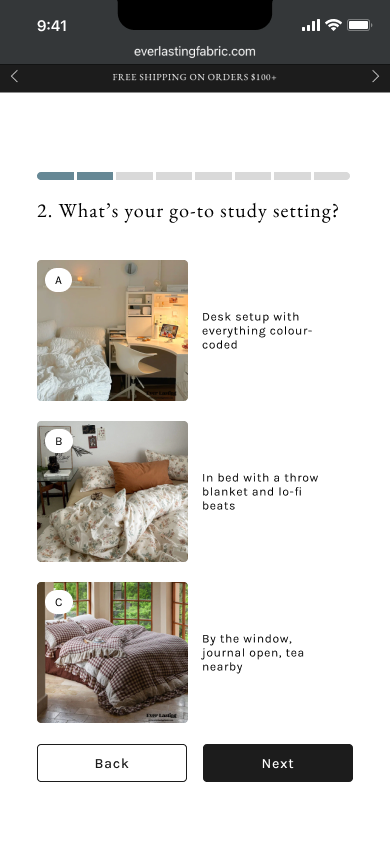

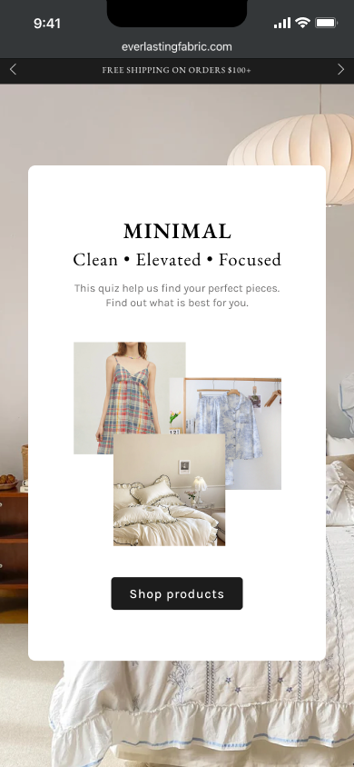

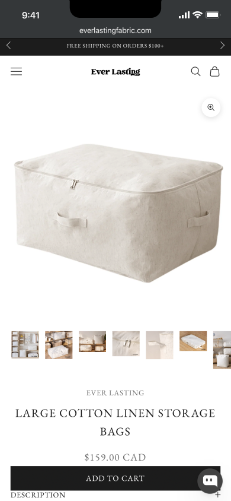
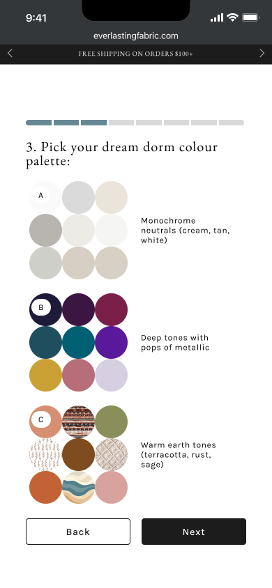
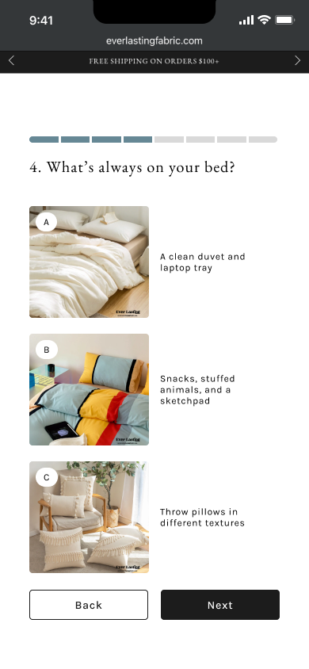


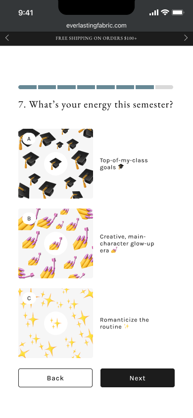

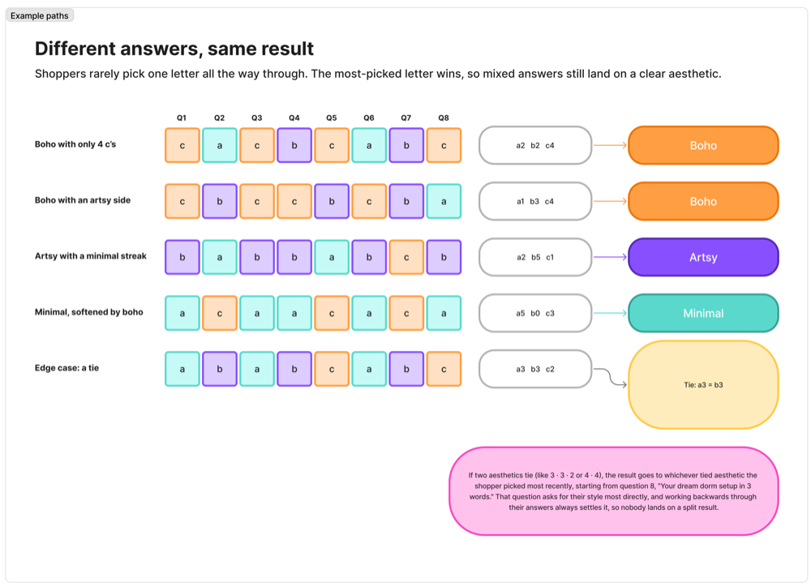
- Role
- Product/Web Design Intern
- Team
- Sole Designer
- Timeline
- 4 Weeks
- Project Type
- E-commerce
Overview
Shoppers knew the feeling they wanted. They just couldn’t find the product.
01 The pitch
A quiz that starts with feelings
During intern onboarding, every intern pitched one idea. Mine was a fabric matchmaking quiz to lift conversion, and it was chosen out of 8 concepts.
02 The campaign
Assigned to back-to-school
The team made it part of the back-to-school launch. I designed and implemented it end to end: 8 dorm-life questions, 3 aesthetics, real product photography.
03 The outcome
A new way to shop, in the main nav
First-time shoppers now answer how they want their dorm to feel and get curated pieces back, instead of scrolling hundreds of look-alikes.
Problem
First-time shoppers loved the look, then left before adding anything to their cart.
Ever Lasting’s catalogue is full of soft neutrals, ruffles, cotton, and linen. Beautiful, but at a glance it all looks the same. New visitors browsed, hesitated, and left at the exact moment they were deciding, while the brand kept paying to bring them in.
What shoppers saw
Dozens of near-identical neutrals
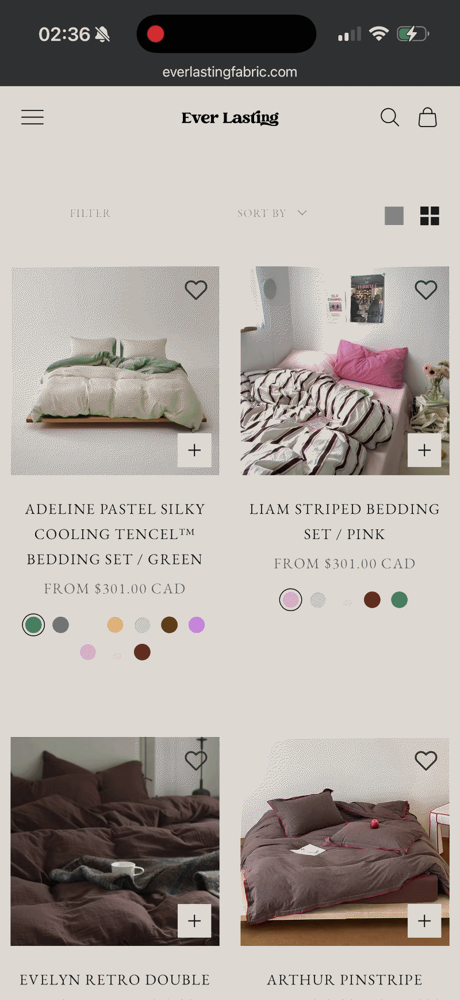
Where they left
Most shoppers dropped off at product view
Ever Lasting’s existing funnel
- 01Site visit
- 02Product view↓ Biggest drop-off
- 03Add to cart
- 04Checkout
- 05Purchase
“Everything looks so similar, I end up opening ten tabs and closing all of them.”
Ever Lasting shopper
Who I designed for
First-time visitors drawn to the aesthetic who don’t know fabric terms yet. For back-to-school, that meant students setting up their first dorm: they know the vibe, not the fabric.
If nothing changed
Ever Lasting keeps paying to bring shoppers in, and they keep leaving right when they’re about to choose.
Research
I had 4 weeks and no research budget, so I picked 3 quick methods that each answered one question.
I skipped a survey because traffic was too low to get answers fast, and formal interviews would have eaten a week I needed for design.
01 Competitive analysis
How do similar brands guide shoppers to a product?
02 Ten shopper chats
How do shoppers describe what they want, in their own words?
03 Reverse keyword search
What words do shoppers actually search with?
Insight 01
Shopping quizzes were useful but cold. Editorial ones were warm but led nowhere.
Parachute and Skims sort by function, like hot vs. cold sleeper. Refinery29 nails mood, but never links it to products.
Insight 02
Shoppers describe what they want in feelings, not features.
They could name a mood instantly (calm, nostalgic, cozy) but not a fabric, weave, or thread count.
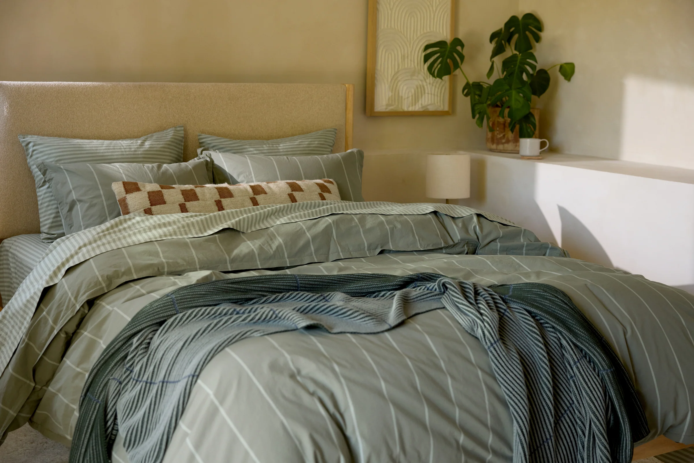
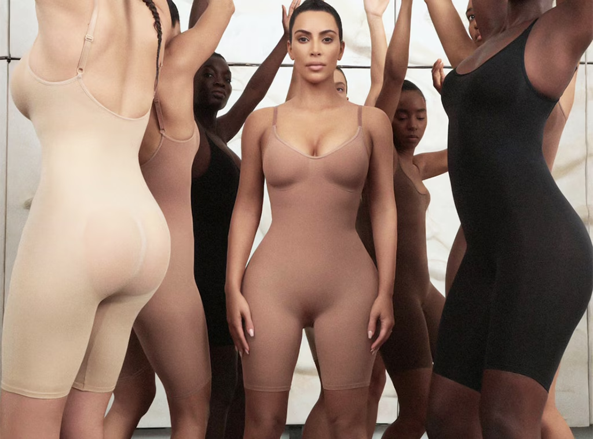
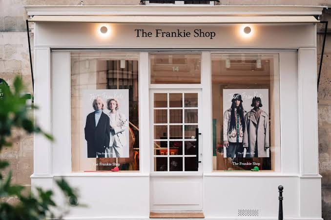
“I know the vibe I want, I just don’t know if that’s linen or cotton or what.”
“Everything looks so similar, I end up opening ten tabs and closing all of them.”
“I don’t really shop by fabric. I shop by how my room will feel.”
Insight 03
Searches clustered into 4 themes: aesthetic, texture, mood, and colour.
Shoppers lead with a feeling, then a texture, then a colour. These 4 themes became the categories for every quiz question.
comfy soft bedding
cottagecore bedding
soft linen duvet
cozy neutral bedroom
The gap I found: Ever Lasting’s soft, poetic voice was a real differentiator, but the website wasn’t carrying it into discovery.
Design problem
How might we help first-time shoppers turn how they want to feel into the right Ever Lasting pieces?
My bet: if shoppers can say what they want in feelings instead of features, they’ll find pieces that feel personal and add to cart instead of leaving.
Why a quiz
I explored 3 ways to guide shoppers. Only one fixed the root problem.
Solution
A 1-minute quiz that turns dorm-life choices into pieces students actually want.
The Fabric Matchmaker lives in the main nav. It asks 8 quick questions, scores each answer toward one of 3 aesthetics, and ends on a persona with curated pieces.
01 Start where shoppers already look
I put “Find Your Fabric Aesthetic” in the main nav, next to Best Sellers and New. A pop-up gets dismissed on reflex. The nav makes the quiz a real way to shop, and let me track how people find it.
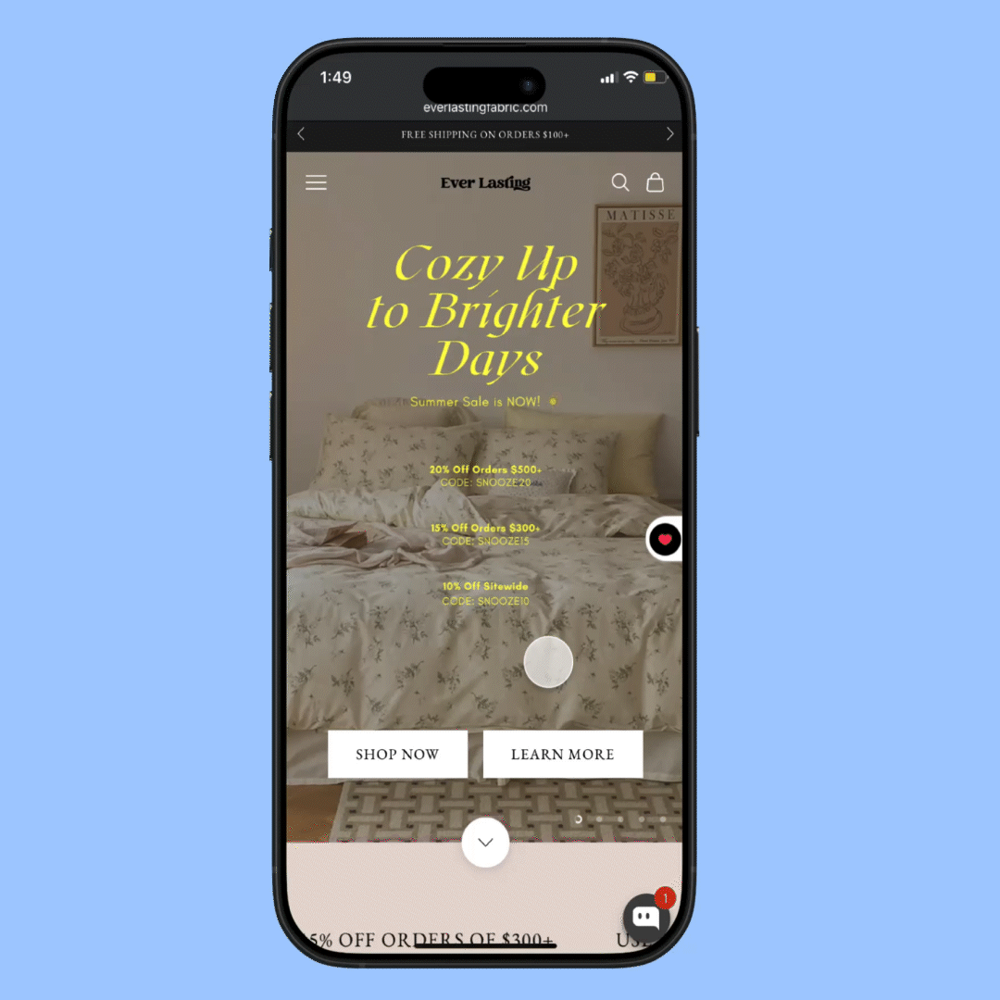
02 Ask about feelings, show real products
8 questions about dorm life: first impressions, study spots, scent, playlist, semester energy. 5 use Ever Lasting’s own product photos and 3 are quick emoji taps, so shoppers see real pieces before they ever hit a result.
03 Give them an identity, not a grid
Answers add up to Minimal, Artsy, or Boho. Each persona reads back what the shopper told me, with its own 3 words and a few curated pieces, so the choice drops from hundreds to a handful.
Minimal
Clean · Elevated · Focused
- Study spot: colour-coded desk
- Scent: crisp sage
- Playlist: classical
Artsy
Expressive · Bold · Intentional
- Study spot: in bed, lo-fi beats
- Scent: incense and leather
- Playlist: lo-fi jazz
Boho
Warm · Textured · Inviting
- Study spot: by the window, tea
- Scent: sweet vanilla
- Playlist: acoustic indie
04 Ask for email after the payoff
Gating the result behind an email gets more sign-ups, but adds drop-off right before the reward. I asked after the result instead, so the ask feels earned. Results sync to Klaviyo, so follow-ups match each shopper’s aesthetic.
CONSIDERED
Gate the result behind email
More sign-ups, more drop-off before the payoff
CHOSEN
Ask after the result
Fewer sign-ups, but shoppers already got value
Process
The quiz started as 10 questions. Feedback on version 1 cut it down to 8.
I built version 1 from the 4 research themes: 10 questions, 4 answers each, with every letter tied to one aesthetic. Then I shared it for feedback. Toggle between versions to see what changed and why.
Version 1 · 10 questions · 4 aesthetics
Quiz screens · version 1
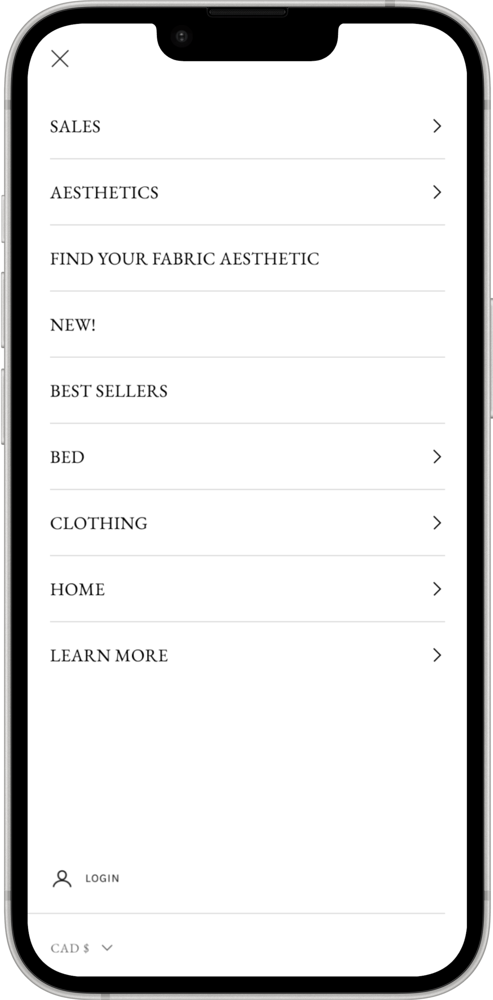
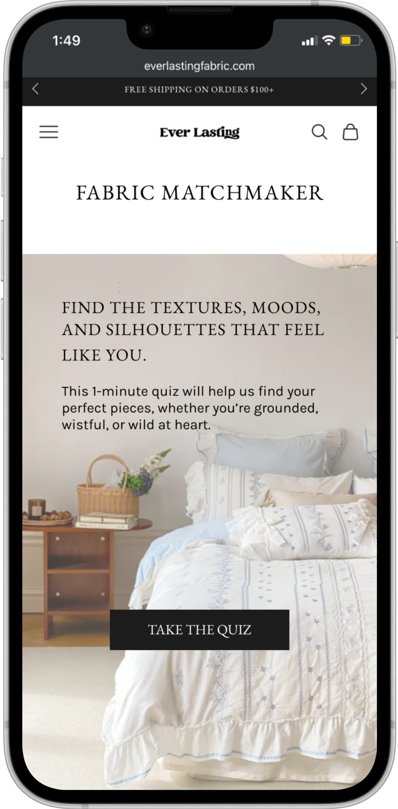
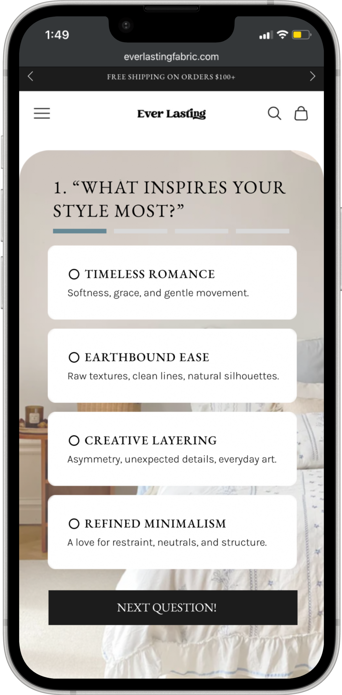
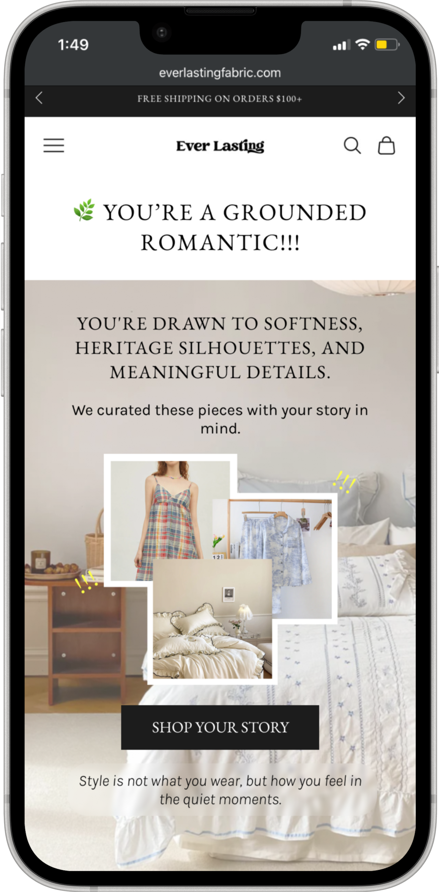
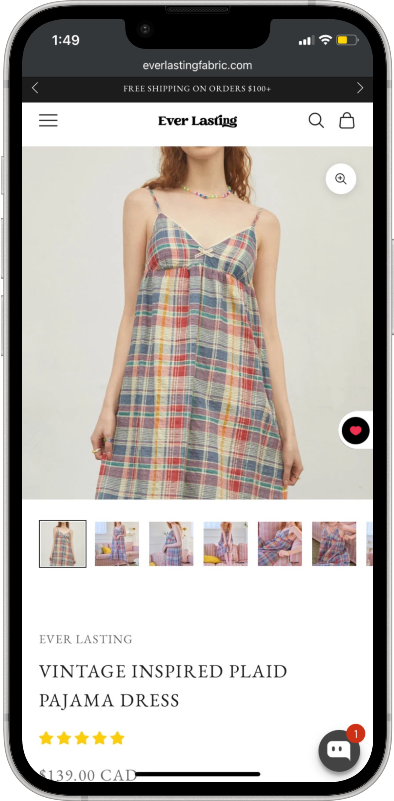
From my FigJam · version 1 map
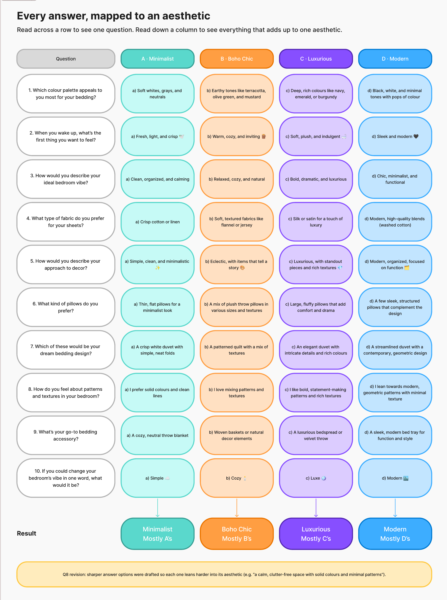
Feedback on version 1
01 Hard to see
Answer text sat on top of a busy bedroom photo, so it was hard to read.
02 Distracting
The full-bleed background photo competed with the answers for attention.
03 Make it simpler
Long, poetic answer labels and 4 options per question slowed people down.
04 No hierarchy
The question, answers, and progress had similar weight, so nothing led the eye.
Quiz screens · version 2
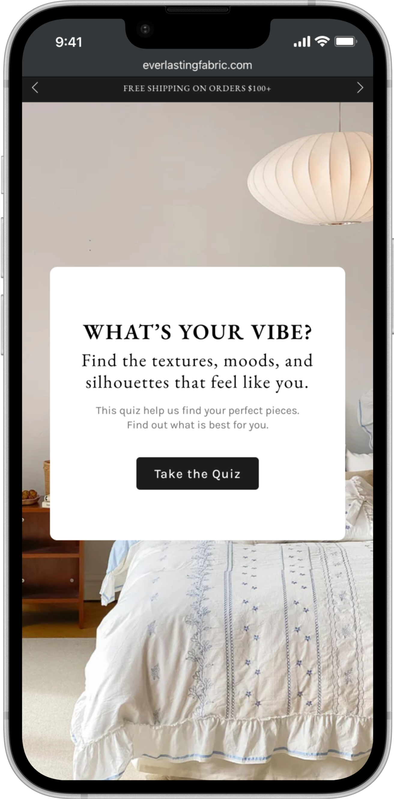
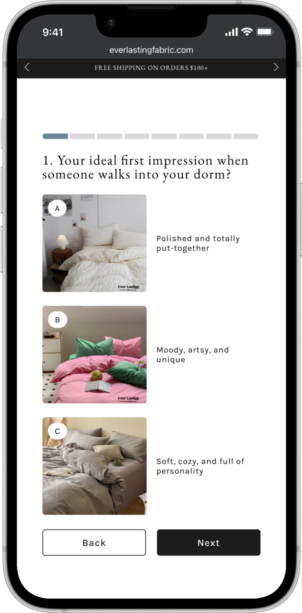
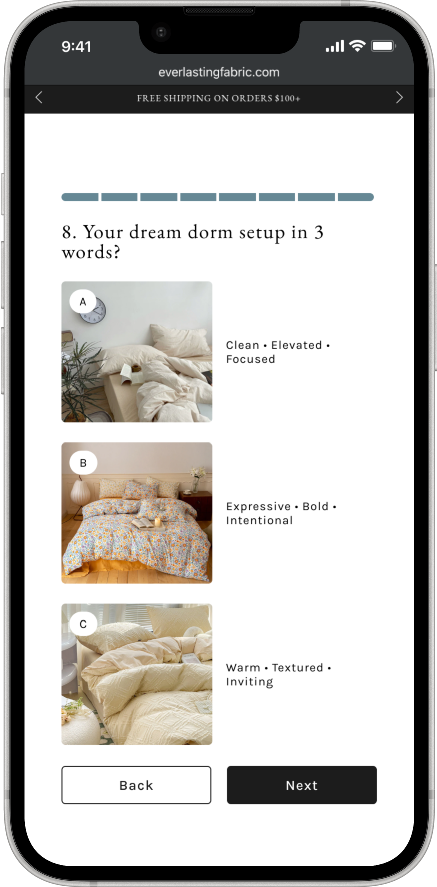
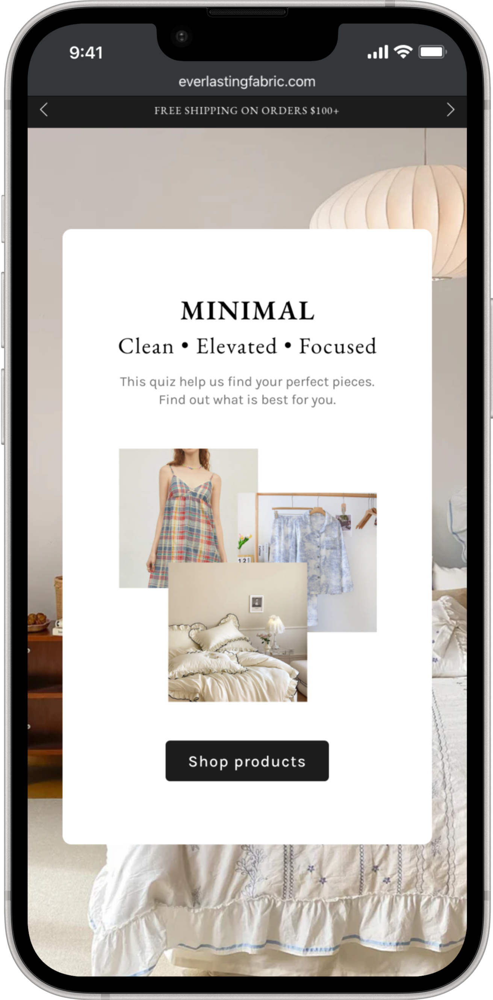
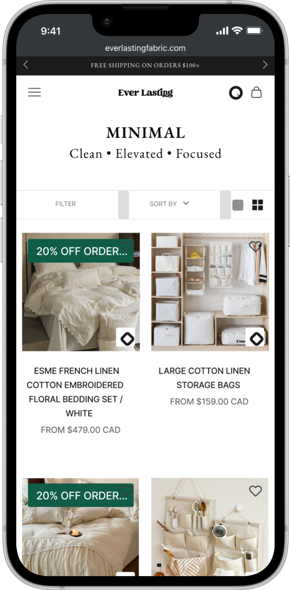
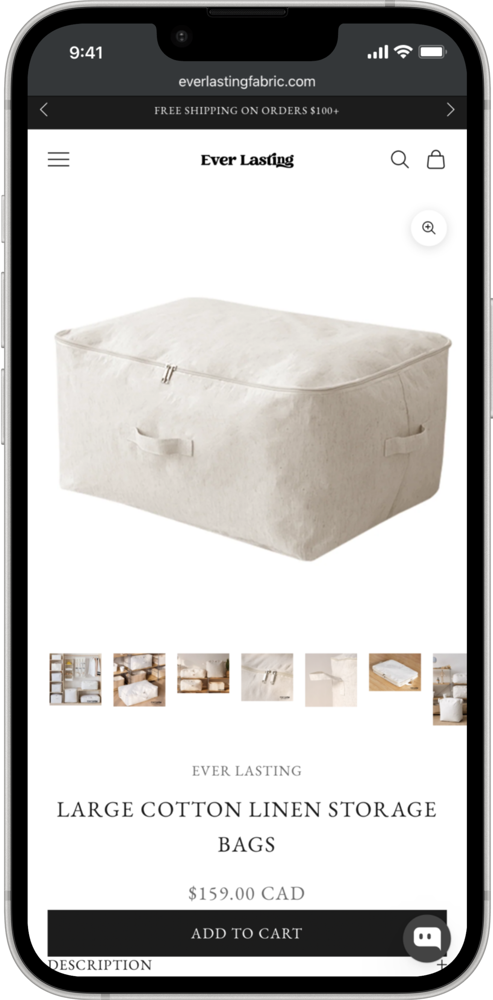
From my FigJam · version 2 map
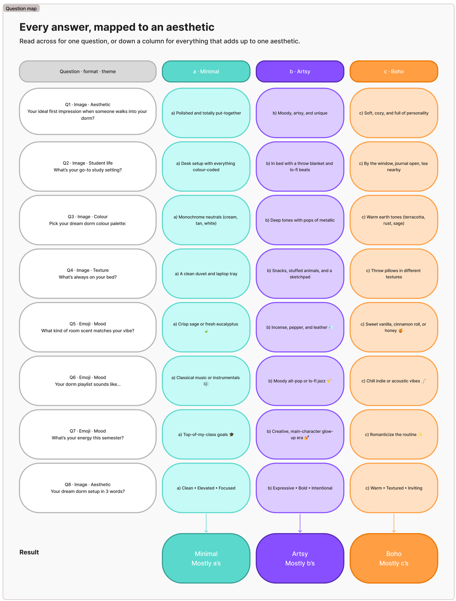
What changed in version 2
01 Easier to read
Each question sits on a clean white card instead of on top of the photo.
02 Real products as answers
Every answer is an Ever Lasting product photo with a short label.
03 Simpler
8 questions, 3 answers each, and 3 clearly different aesthetics.
04 Clear hierarchy
Progress on top, question first, answers as cards, Back and Next at the bottom.
Every answer is a point, so mixed answers still land somewhere clear.
Shoppers rarely pick one letter all the way through. Whichever aesthetic collects the most points becomes their result.
Tie-break: if two aesthetics tie (like 3 · 3 · 2 or 4 · 4), the result goes to whichever tied aesthetic the shopper picked most recently, starting from question 8, “Your dream dorm setup in 3 words.” That question asks for their style most directly, and working backwards through their answers always settles it, so nobody lands on a split result.
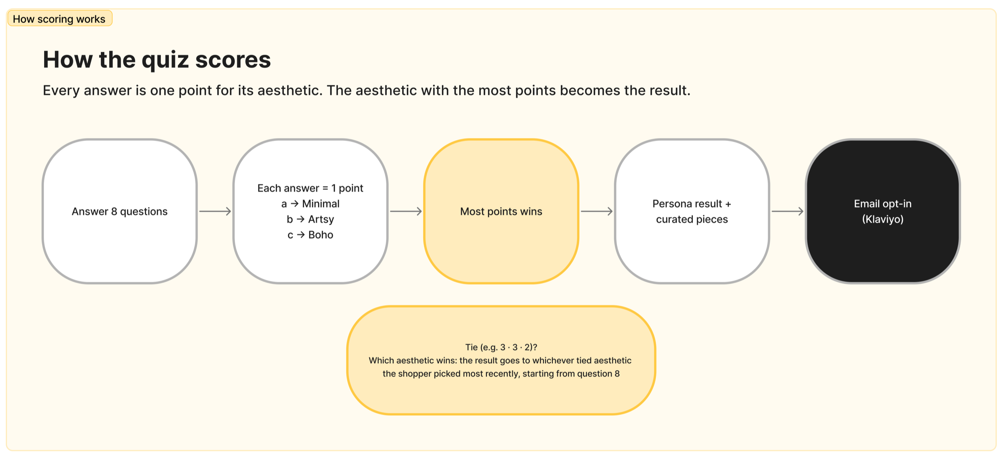
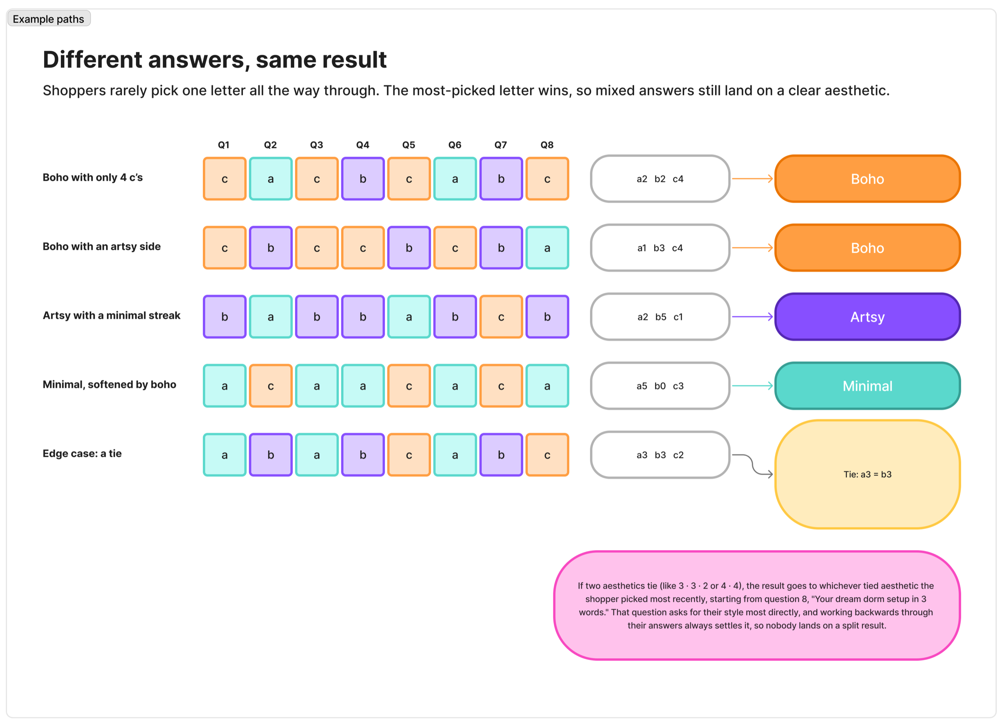
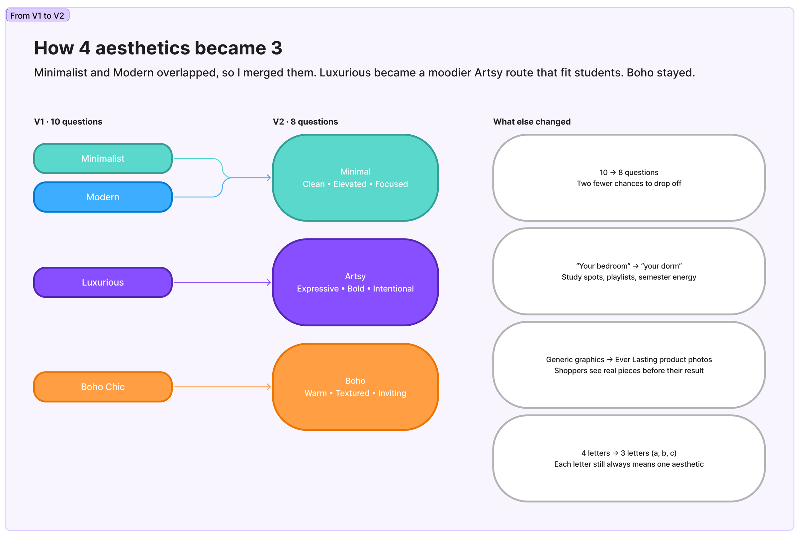
Impact
Quiz takers converted 25% more often than shoppers who browsed on their own.
Chosen out of 8 intern concepts, then designed and shipped by me in 4 weeks for the back-to-school launch.
+25%
conversion from quiz takers vs. non-quiz shoppers
~22%
less drop-off during discovery
+20%
sales on launch day vs. the average day in the month before
1 of 8
intern pitches chosen to ship
My takeaways
Brand is a UX tool.
Ever Lasting's branding was a real market differentiator that can be used for leverage. The best fix for decision fatigue wasn’t fewer products, it was a better question.
Cut what blurs.
Going from 10 questions to 8 and 4 aesthetics to 3 made every result more focused (fewer, clearer choices beat more, overlapping ones).
Pitch like it’s already real!
Pitch like it's already real! I was an intern in my first week, the idea got picked because it showed why this brand, why this problem, and why now.
If I had more time
I’d bring the matchmaker onto product pages as a style concierge, and test persona-based Klaviyo emails to see how many quiz takers come back for a second order.